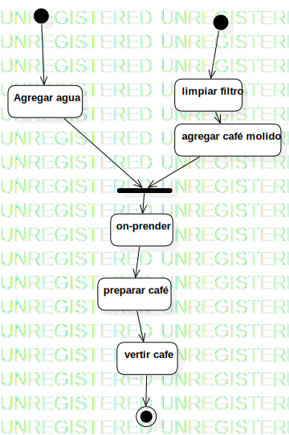

Activity1
UMLActivity
Untitled
::
Activity1
Description
none
Diagrams

ActivityDiagram1
Nodes
Agregar agua
on-prender
preparar café
vertir cafe
limpiar filtro
agregar café molido
JoinNode1
InitialNode1
InitialNode2
ActivityFinalNode1
Edges
(Agregar agua→JoinNode1)
(limpiar filtro→agregar café molido)
(agregar café molido→JoinNode1)
(JoinNode1→on-prender)
(InitialNode1→Agregar agua)
(InitialNode2→limpiar filtro)
(on-prender→preparar café)
(preparar café→vertir cafe)
(vertir cafe→ActivityFinalNode1)
Properties
Name
Value
name
Activity1
stereotype
null
visibility
public
isReentrant
true
isReadOnly
false
isSingleExecution
false
Owned Elements
ActivityDiagram1